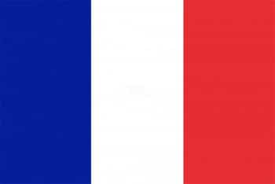
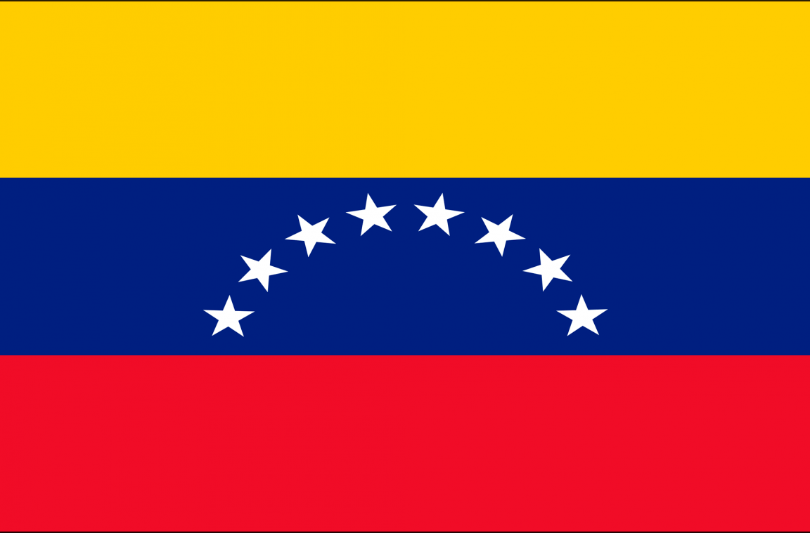

Alemanha (em alemão: Deutschland), oficialmente República Federal da Alemanha (em alemão: Bundesrepublik Deutschland, AFI: [ˈbʊndəsʁepuˌblik ˈdɔʏtʃlant] Ltspkr.png ouça),[8] é um país localizado na Europa Central. É limitado a norte pelo mar do Norte,
Dinamarca e mar Báltico, a leste pela Polônia e Chéquia, a sul pela Áustria e Suíça e a oeste pela França, Luxemburgo, Bélgica e Países Baixos. O território da Alemanha abrange 357 021 quilômetros quadrados e é influenciado por um clima temperado sazonal.
Com 82,8 milhões de habitantes, em 31 de dezembro de 2015,[4] o país tem a maior população da União Europeia e é também o lar da terceira maior população de migrantes internacionais em todo o mundo
Cultura
A Alemanha é historicamente chamada de Das Land der Dichter und Denker (A terra dos poetas e pensadores).[210] Desde 2006, o país tem se autodenominado Terra das ideias.[211] A cultura alemã tem seu início muito antes do surgimento da Alemanha como um
estado-nação e abrange todo o mundo falante do alemão. De suas raízes, a cultura na Alemanha tem sido moldada pelas principais tendências intelectuais e populares da Europa, tanto religiosas quanto seculares. Como resultado, é difícil identificar uma
tradição alemã específica separada de um contexto maior da alta cultura europeia.
Infraestrutura
Desde os anos de 1930 iniciara-se na Alemanha a construção da primeira rede de autoestradas em grande escala. O país dispõe de 12 174 km de autoestradas (Autobahn) e de 40 969 km de estradas federais[66][171] (Bundestraßen), o que faz da Alemanha o
país com a 3ª maior densidade de estradas por veículos do mundo
Economia
A Alemanha é a maior economia da Europa, a quarta maior quando é considerado o PIB nominal e a quinta maior quando é considerada a Paridade do Poder de Compra.[150] O crescimento de 2007 foi de 2,4%,[151] Desde a revolução industrial o país tem
sido criador, inovador e beneficiário de uma economia globalizada. A exportação de bens produzidos na Alemanha é um dos principais fatores da riqueza alemã. A Alemanha é maior exportador mundial com 1,13 trilhões * de dólares exportado em 2006
(países da Eurozona incluído) e gerou um superávit comercial de 165 bilhões * de euros.[152] O setor de serviços contribui com 70% do PIB, a indústria 29,1% e a agricultura 0,9%. A maioria dos produtos alemães são em engenharia, especialmente
automóveis, máquinas, metais, e produtos químicos.[75] A Alemanha é o maior produtor de turbinas eólicas e tecnologia de energia solar do mundo.[153] Algumas das maiores feiras de negócios internacionais são realizadas todos os anos em cidades
alemãs como Hanôver, Frankfurt am Main e Berlim
EEUU
Historia
Cultura
Infraestrutura
Economia
Historia
É geralmente aceito que os primeiros habitantes da América do Norte migraram da Sibéria por meio da
ponte terrestre de Bering e chegaram há pelo menos 12 000 anos; no entanto, evidências crescentes
sugerem uma chegada ainda mais precoce.[33][34][35] Depois de atravessar a ponte terrestre, os
primeiros nativos americanos se moveram para o sul ao longo da costa do Pacífico[36] e por um
corredor interior sem gelo.[37] A Cultura Clóvis apareceu por volta de 11 000 a.C. e é considerada
um ancestral da maioria das culturas indígenas posteriores das Américas.[38] Esta cultura era
considerada o primeiro assentamento humano do continente americano.[39] Ao longo dos anos, no entanto,
mais e mais evidências apontam a ideia de culturas "pré-Clóvis", incluindo ferramentas que datam de 15
550 anos atrás. É provável que eles representem a primeira das três principais ondas de migração para a
América do Norte
Cultura
Os Estados Unidos são uma nação multicultural, lar de uma grande variedade de grupos étnicos,
tradições e valores.[12][305] Além das já pequenas populações nativas americanas e nativas do
Havaí, quase todos os americanos ou os seus antepassados emigraram nos últimos cinco séculos.
[306] A cultura em comum pela maioria dos americanos é a cultura ocidental em grande parte derivada
das tradições de imigrantes europeus, com influências de muitas outras fontes, tais como as
tradições trazidas pelos escravos da África.[12][307][308] A imigração mais recente da Ásia
e especialmente da América Latina adicionou uma mistura cultural que tem sido descrita tanto
como homogeneizada quanto heterogênea, já que os imigrantes e seus descendentes mantêm
especificidades culturais.
Infraestrutura
Os Estados Unidos têm sido um líder em pesquisa científica e em inovação tecnológica desde
o século XIX. Em 1876, Alexander Graham Bell registou a primeira patente americana para o
telefone. O laboratório de Thomas Edison desenvolveu o primeiro fonógrafo, a primeira
lâmpada incandescente, a primeira câmera de vídeo viável. Nikola Tesla foi o pioneiro
da corrente alternada, do motor AC e do rádio. No início do século XX, as empresas de
automóveis de Ransom E. Olds e Henry Ford promoveram a linha de montagem. Os irmãos
Wright, em 1903, fizeram o primeiro objeto sustentado e controlado mais pesado que
o ar voar.
Economia
Os Estados Unidos têm uma economia mista capitalista, que é abastecida por recursos
naturais abundantes, uma infraestrutura bem desenvolvida e pela alta produtividade.
Entre as décadas de 1830 e 1860, período conhecido com free banking era, o país permitia
a emissão de moeda privada e possuía um sistema bancário livre de regulamentações.
De acordo com o Fundo Monetário Internacional, o PIB dos Estados Unidos de 14,4
trilhões de dólares representa 24% do produto interno bruto mundial no mercado de
câmbio e quase 21% do produto interno bruto mundial em paridade do poder de compra
(PPC).[16] O maior PIB nacional do mundo era cerca de 5% menor do que o PIB combinado
da União Europeia em PPC, em 2008. O país ocupa a décima sétima posição no mundo em
termos de PIB nominal per capita e a sexta posição em PIB per capita PPC
Argentina
Historia
Cultura
Infraestrutura
Economia
Historia
A área conhecida atualmente como a Argentina era relativamente pouco povoada até o período da
colonização europeia. Os primeiros vestígios de vida humana são datados do período Paleolítico
e há indícios adicionais dos períodos Mesolítico e Neolítico.[22] No entanto, grandes áreas do
interior eram aparentemente despovoadas durante um extenso período de secas entre 4000 e 2000 a.C.
Cultura
A cultura argentina tem importantes influências europeias. Buenos Aires, sua capital cultural,
é amplamente caracterizada pela prevalência de pessoas de ascendência europeia e da imitação
consciente dos estilos europeus na arquitetura.[231] Outra influência importante foram os
gaúchos e seu estilo de vida tradicional auto-suficiente. Finalmente, tradições indígenas
americanas (como infusões de erva-mate) foram absorvidas pelo ambiente cultural geral.
Infraestrutura
Saúde na Argentina é provida através da combinação de planos patrocinados por sindicatos
de trabalhadores e empregados ("Obras Sociales"), planos de seguro do governo, hospitais
e clínicas públicas, e através de planos de saúde privados. Esforços governamentais para
melhorar a saúde pública na Argentina podem ser traçados até o primeiro tribunal médico
de 1780 do Vice-rei da Espanha Juan José de Vértiz
Economia
A economia da Argentina é a terceira maior da América Latina,[150] com uma alta
qualidade de vida e um PIB per capita elevado,[151] além de ser considerada uma
economia de renda média-alta.
França

Historia
Cultura
Infraestrutura
Economia
Historia
Os traços mais antigos de hominídeos no que é agora a França datam de aproximadamente 1,8
milhão de anos atrás.[21] Eles foram confrontados por um clima severo e variável, marcado
por várias eras glaciais. Os primeiros hominídeos levavam a uma vida nômade de caçadores-coletores.
[21] A França tem um grande número de cavernas decoradas da era paleolítica, incluindo
uma das mais famosas e melhor preservadas: Lascaux (aproximadamente 18 000 a.C.).
Cultura
A França tem sido um centro de criação cultural por séculos. Muitos artistas franceses
estiveram entre os mais famosos de seu tempo e a França ainda é reconhecida no mundo
pela sua rica tradição cultural. Os sucessivos regimes políticos que sempre promoveram
a criação artística e a criação do Ministério da Cultura em 1959 ajudaram a preservar
o patrimônio cultural do país e torná-lo disponível ao público. O Ministério da Cultura
tem sido muito ativo desde a sua criação na concessão de subsídios aos artistas,
promovendo a cultura francesa no mundo, apoiando festivais e eventos culturais,
além de proteger monumentos históricos. O governo francês também conseguiu manter
uma exceção cultural para defender produtos audiovisuais feitos no país
Infraestrutura
A França é o menor emissor de dióxido de carbono entre os sete países mais
industrializados do mundo, devido ao seu forte investimento em energia nuclear.
[196] Como resultado de grandes investimentos em tecnologia nuclear, a maior
parte da eletricidade produzida no país é gerada por 59 usinas nucleares
(78% em 2006, a partir de apenas 8% em 1973, 24% em 1980, e 75% em 1990).
[197] Em 2021, a França tinha, em energia elétrica renovável instalada,
25 712 MW em energia hidroelétrica (10º maior do mundo), 18 676 MW em
energia eólica (8º maior do mundo), 14 718 MW em energia solar
(11º maior do mundo), e 1 362 MW em biomassa
Economia
Um membro G8, grupo líder dos principais países industrializados, o país é
classificado como a sétima maior economia do mundo e segunda maior da Europa
é por PIB nominal;[173] com 39 das 500 maiores empresas do mundo em 2010, a
França ocupava o quarto lugar no mundo e o primeiro na Europa na lista Fortune
Global 500, à frente da Alemanha e do Reino Unido. A França se juntou aos onze
outros membros da União Europeia para criar o euro em 1 de janeiro de 1999,
substituindo completamente o franco francês no início de 2002
Venezuela

Historia
Cultura
Infraestrutura
Economia
Historia
Antes da chegada dos europeus, a Venezuela era habitada por vários povos dos quais se destacam
os índios caribes, os aruaques e os cumanagotos.
Em 1498 Cristóvão Colombo chegou à costa da Venezuela durante a sua terceira viagem ao continente
americano. A colonização espanhola iniciou-se em 1520, incidindo nas ilhas e na região costeira.
Em 1567 foi fundada a cidade de Caracas, que se tornaria o centro mais importante da região.
O território que é hoje a Venezuela esteve dividido entre o Vice-Reino do Peru e audiência de
Santo Domingo até ao estabelecimento do vice-reino de Granada em 1717. Em 1776 a Venezuela tornou-se
uma capitania-geral do Império Espanhol.
Cultura
A cultura da Venezuela é uma mistura que inclui, essencialmente, três famílias diferentes:
os ameríndios, os africanos e os espanhóis. As duas primeiras culturas eram, por sua vez,
diferenciadas de acordo com as tribos. A aculturação e assimilação, típica de um sincretismo
cultural, causou impacto na cultura venezuelana atual, similar em muitos aspectos ao resto
da América Latina, embora haja diferenças importantes
Infraestrutura
A educação na Venezuela está estruturada em quatro níveis: pré-escolar, primário,
secundário e superior. É regulamentado pela Lei Orgânica de Educação, que dá a ela
um caráter obrigatório e gratuito do pré-escolar ao nível secundário (6 a 15 anos)
e nas universidades administradas diretamente pelo Estado ao nível de graduação.
[144] Em este assunto o Estado tem o poder de criar os serviços relevantes para
facilitar e manter o acesso a todos os tipos de educação.
Economia
Em 2020, o país foi o 76º maior exportador do mundo (US $ 16,4 milhões em
mercadorias, 0,1% do total mundial).[107][108] Já nas importações, em 2016,
foi o 63º maior importador do mundo: US$ 33,6 bilhões.